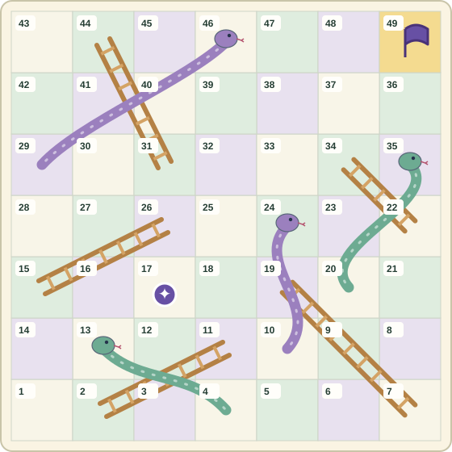
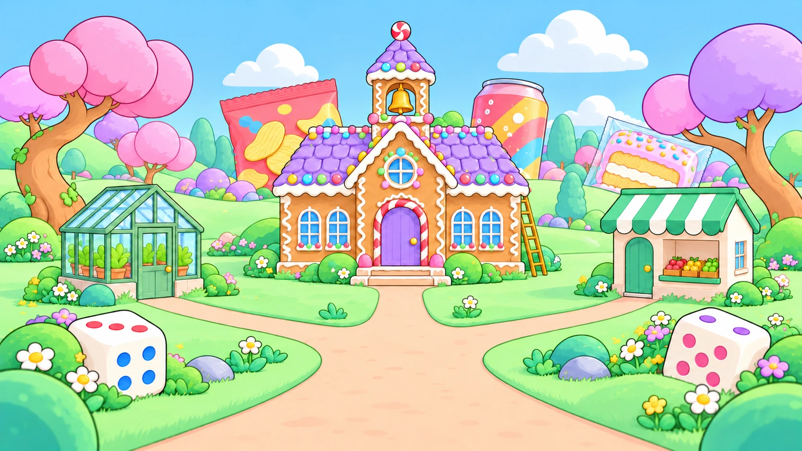

Follow the board
Take turns with Pip. Hop between squares, climb ladders and slide down snakes. Reach 49 with an exact roll to win.
Welcome to Gutville. Race Pip the pear up the snakes and ladders board, and investigate the clues behind everyday foods.
Play in your browser, at home or at school.

Start at the gingerbread clubhouse. Two more destinations are planned for future adventures.

Explore food processing and ultra-processed foods through practical examples and short questions.
Take turns with Pip. Hop between squares, climb ladders and slide down snakes. Reach 49 with an exact roll to win.
Up to one question follows each child roll. Inspect ingredients, consider how food is made and try new examples.
Practice questions offer explanations and supportive retries. Answers never change movement or the winner.
The live app records initial predictions, practice and later application answers. A protected researcher dashboard compares matched first answers, shows repeat-play trends and exports CSV files.
Games may finish before every question is reached. Missing answers are excluded from matched comparisons. These project-specific measures have not been validated and cannot establish that the game caused a learning change.
About the game and privacy ↗The full game opens on its live website.